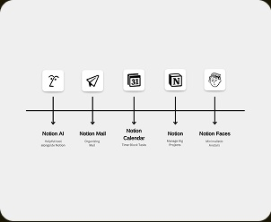
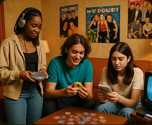
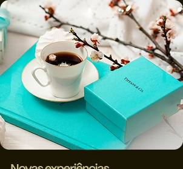
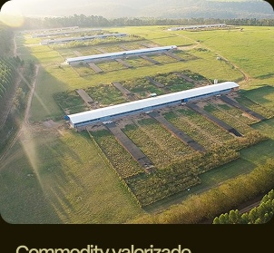

O universo notion
Como a consistência visual está construindo um império digital.
Notícias sobre o universo das marcas.
Branding · Marketing · Criatividade · Negócios · Design

Como a consistência visual está construindo um império digital.
A evolução silenciosa de um gigante do varejo

Como ela está ressuscitando a estética dos anos 90
Como medir o ROI em micro e pequenas empresas.

Da passarela para o paladar, o caminho das grandes marcas.

Como o branding transformou simples ovos em ouro.